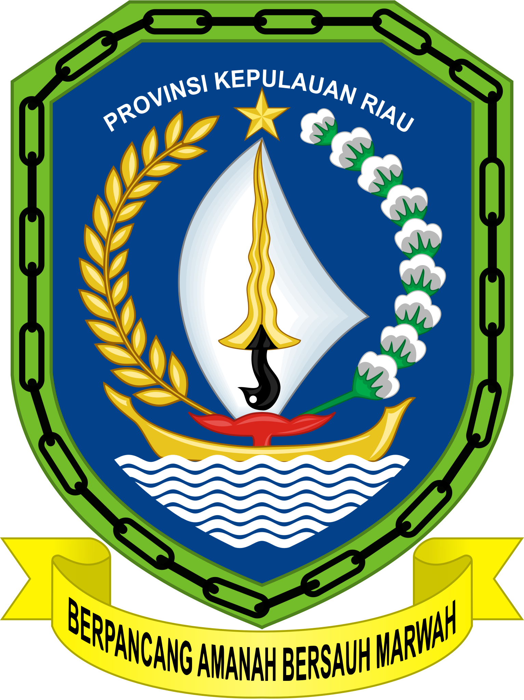

Selamat Datang di SIPUMA
Sistem Informasi Pendataan Usaha Masyarakat (UMKM)
Masuk / Daftar Akun Daftar Usaha Sekarang



SIPUMASistem Informasi Pendataan Usaha Masyarakat (UMKM)
Masuk / Daftar Akun Daftar Usaha Sekarang

SIPUMA adalah sistem digital Dinas Usaha Kecil dan Menengah (UMKM) Tanjungpinang yang digunakan untuk mendata dan mengelola informasi UMKM guna mempermudah penyaluran bantuan, pembinaan, dan kebijakan berbasis data.